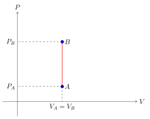
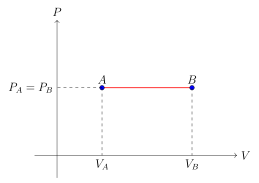
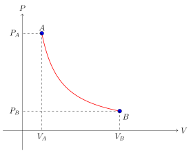
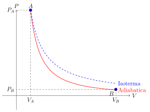
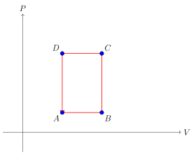

13.15 Alcune trasformazioni termodinamiche
Analizzeremo alcune delle principali e più note trasformazioni termodinamiche soffermandoci sulle loro principali proprietà.
13.15.1 Trasformazioni isocore#
Questa condizione si esprime matematicamente come:
Le trasformazioni isocore sono particolarmente importanti nello studio dei gas e possono essere rappresentate graficamente sul piano P-V come linee verticali.

Lavoro in una trasformazione isocora#
In una trasformazione isocora, il lavoro compiuto dal sistema è nullo. Questo è una conseguenza diretta della definizione di lavoro in termodinamica:
Poiché in una trasformazione isocora , il lavoro risulta:
Variazione di energia interna#
Per un gas ideale, la variazione di energia interna in una trasformazione isocora è direttamente proporzionale alla variazione di temperatura:
dove è il numero di moli, è il calore specifico molare a volume costante e è la variazione di temperatura.
Calore scambiato#
Dal primo principio della termodinamica, sappiamo che:
Poiché in una trasformazione isocora il lavoro è nullo (), tutto il calore scambiato va a modificare l’energia interna del sistema:
Relazione tra pressione e temperatura#
Per un gas ideale in una trasformazione isocora, la relazione tra pressione e temperatura è data dalla legge di Gay-Lussac:
Questa relazione può essere derivata dall’equazione di stato dei gas perfetti, , considerando e costanti:
dove è una costante.
13.15.2 Trasformazioni isobare#
Matematicamente, questa condizione si esprime come:
Le trasformazioni isobare sono rappresentate graficamente sul piano P-V come linee orizzontali.

Lavoro in una trasformazione isobara#
In una trasformazione isobara, il lavoro compiuto dal sistema è dato dall’integrale della pressione rispetto alla variazione di volume:
Poiché la pressione è costante, possiamo estrarla dall’integrale:
Questa equazione mostra che il lavoro in una trasformazione isobara è direttamente proporzionale alla variazione di volume.
Variazione di energia interna#
Per un gas ideale, la variazione di energia interna in una trasformazione isobara è:
dove è il numero di moli, è il calore specifico molare a volume costante e è la variazione di temperatura.
Calore scambiato#
Il calore scambiato in una trasformazione isobara può essere calcolato utilizzando il calore specifico a pressione costante, :
È importante notare che per i gas ideali. La relazione tra e è data dalla relazione di Mayer:
dove è la costante universale dei gas.
Relazione tra volume e temperatura#
Per un gas ideale in una trasformazione isobara, la relazione tra volume e temperatura è data dalla legge di Charles:
Questa relazione può essere derivata dall’equazione di stato dei gas perfetti, , considerando e costanti:
dove è una costante.
13.15.3 Trasformazioni isoterme#
Matematicamente, questa condizione si esprime come:
Le trasformazioni isoterme per un gas ideale sono rappresentate graficamente sul piano P-V come iperboli equilatere.

Equazione caratteristica#
Per un gas ideale, la relazione tra pressione e volume in una trasformazione isoterma è data dalla legge di Boyle:
Questa relazione può essere derivata dall’equazione di stato dei gas perfetti, , considerando e costanti:
dove è una costante.
Lavoro in una trasformazione isoterma#
Il lavoro compiuto durante una trasformazione isoterma di un gas ideale può essere calcolato come segue:
Alternativamente, usando la relazione , possiamo esprimere il lavoro in termini di pressioni:
Variazione di energia interna#
Per un gas ideale, l’energia interna dipende solo dalla temperatura. Poiché in una trasformazione isoterma la temperatura rimane costante, la variazione di energia interna è nulla:
Calore scambiato#
Dal primo principio della termodinamica, sappiamo che:
Poiché in una trasformazione isoterma , abbiamo:
Questo risultato mostra che in una trasformazione isoterma, il calore scambiato è uguale in modulo al lavoro compiuto, ma di segno opposto.
13.15.4 Trasformazioni Adiabatiche#
Matematicamente, questa condizione si esprime come:
Le trasformazioni adiabatiche sono rappresentate graficamente sul piano P-V come curve più ripide rispetto alle isoterme.

Equazione caratteristica#
Per un gas ideale, la relazione tra pressione e volume in una trasformazione adiabatica è data dall’equazione di Poisson:
dove è il rapporto tra i calori specifici a pressione costante e a volume costante.
Tale relazione si può dimostrare partendo dal primo principio della termodinamica e considerando che in una trasformazione adiabatica:
Per un gas ideale, e . Sostituendo:
Integrando entrambi i lati:
Usando la relazione , possiamo scrivere:
Riarrangiando:
Da cui:
Lavoro in una trasformazione adiabatica#
Il lavoro compiuto durante una trasformazione adiabatica di un gas ideale può essere calcolato come segue:
Variazione di temperatura#
In una trasformazione adiabatica, la temperatura cambia. La relazione tra temperatura e volume (o pressione) può essere derivata dall’equazione di Poisson:
Variazione di energia interna#
In una trasformazione adiabatica, la variazione di energia interna è uguale al lavoro compiuto sul sistema (con segno opposto):
Confronto con le trasformazioni isoterme#
Le trasformazioni adiabatiche differiscono dalle isoterme in diversi aspetti:
Nelle adiabatiche la temperatura cambia, nelle isoterme rimane costante
Le adiabatiche sono più ripide delle isoterme sul piano
Nelle adiabatiche non c’è scambio di calore, nelle isoterme il calore scambiato è uguale al lavoro compiuto
L’equazione caratteristica è per le adiabatiche, per le isoterme
13.15.5 Trasformazioni cicliche#
Queste trasformazioni sono di fondamentale importanza nello studio delle macchine termiche e dei refrigeratori.

Proprietà fondamentali#
Variazione nulla delle funzioni di stato: Poiché il sistema ritorna allo stato iniziale, la variazione netta di tutte le funzioni di stato (come energia interna, entalpia, entropia) è zero:
Calore netto: Il calore netto scambiato durante un ciclo è uguale al lavoro netto compiuto:
Questa relazione deriva dal primo principio della termodinamica: . Poiché in un ciclo, .